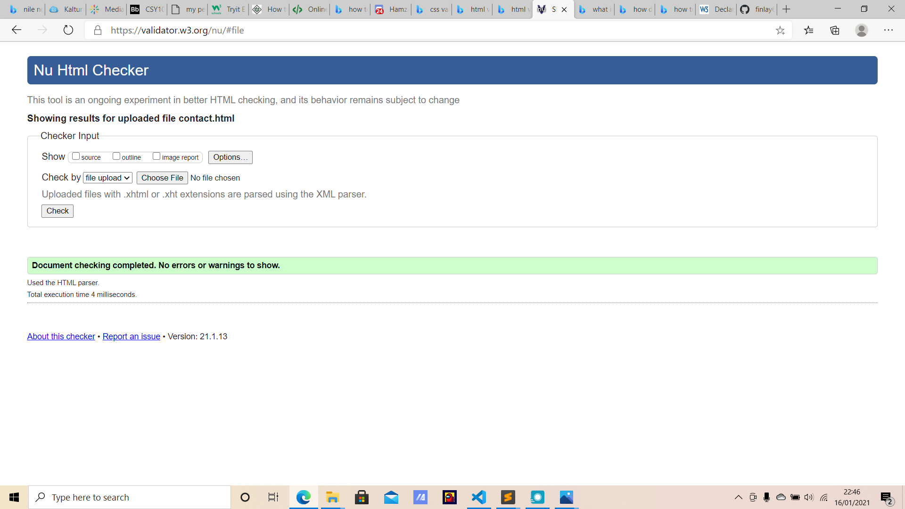

.png)
.png)

Off the bat I would like to give you credit tom for the way you have taught this module. Due to lots of mitigating circumstances I haven't been able to attend every single lecture but the way you shorten and create lots of relevant clips is really useful and a great way of teaching. In my website I have tried to stick as close to the mark scheme as possible, I couldn't find and marks related to opinions on how the site looks so I just used code to try and stick to the very basics of the specification. this includes and is not limited to, creating functional navigation bar with working links to other pages, using a grid layout, having different design specs for mobile application and creating a hamburger icon in the mobile version of the site only. During the coding of my website I have learned that all the CSS files I have created are not necessary and less can be used for the same affect, also my main problem is with the de bugging process as when you get an error the website will still function (logic error) which is less common for me as I have a little experience in python where a lot of the time I never got logic errors. However on the up side I have never used git hub before and my experience is very positive of it. It is very easy to create multiple branches and multiple commits inside of these branches and it gives your work a really good layout/foundation in order for you to clearly see where you have come from and where you are going (if it wasn't for revert I definitely would've failed).also i was confused about the absolute vs relative url links and took me about half an hour to realise that i had done it correctly the first time round. lastly I couldnt show screen shots of my progress bevause u didnt see we had to do that until the very end but you can see constant commits that easly show my progress of my coding of this website.